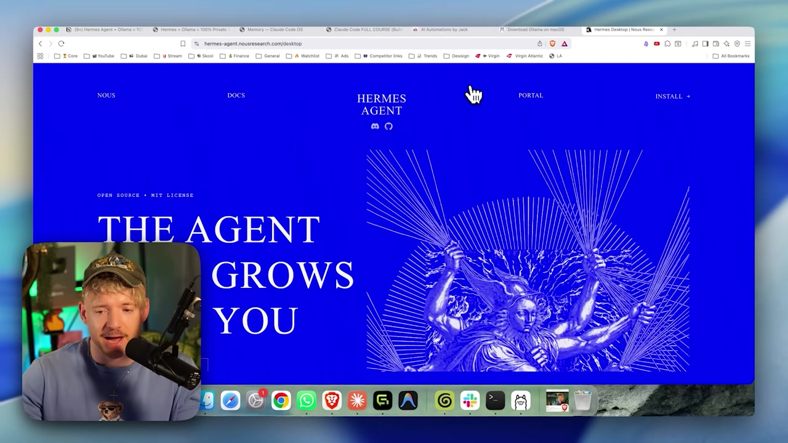

🤖 Proyecto 2: Agente Hermes ejecutándose localmente (Vault de principio a fin)
El salto del Proyecto 1: del chat al agente completo. Vas a conectar el modelo de 64k al Agente Hermes, activar el modo Vault (airgapped) y pedirle al agente que ejecute una tarea real, todo sin que salga un solo byte de la máquina. Es el "santo grial" del curso: potente, 100% privado y a $0.
La línea del proyecto: del modelo de 64k hasta la confirmación de que no salió nada, con el Vault conectado en medio: el paso que hace que el agente sea seguro para datos sensibles.
🎯 Objetivo: el agente completo en el Vault
La meta de este proyecto es ejecutar el Agente Hermes de principio a fin usando solo tu modelo local, en modo Vault — aislado de internet. A diferencia del Proyecto 1 (que era un chat), aquí el agente actúa: usa herramientas, ejecuta tareas, pero todo dentro de tu máquina.

🧭 Qué tendrás al final
- •El modelo de 64k (del Módulo 2.4) conectado a Hermes.
- •El agente operando en modo Vault, sin red.
- •Una tarea real completada 100% local.
- •La confirmación de que ningún dato salió de la máquina.
¿Nuevo por aquí? "End-to-end" (de punta a punta) quiere decir que todo el flujo —desde tu solicitud hasta el resultado— ocurre sin salir de la máquina. "Airgapped" es el término de seguridad para un sistema físicamente aislado de la red; el modo Vault lo simula desconectando al agente de internet.
Conceptos clave
LLM + herramientas: actúa, no solo responde.
Open-source, de Nous Research; tú controlas el flujo.
Modo airgapped: el agente aislado de la red.
Del pedido al resultado, todo en tu máquina.
🪟 Tener qwen3-coder-64k listo
Objetivo de la etapa: confirmar que el modelo de contexto 64k que creaste en el Módulo 2.4 está disponible en Ollama. El agente Hermes requiere 64k de contexto — un modelo de chat común no sirve, porque la memoria y las herramientas ocupan mucho espacio.
🎯 Comprobar el modelo (y volver a crearlo, si hace falta)
Comando para pegar (objetivo: comprobar si existe el modelo de 64k):
ollama list
# procure por:
# qwen3-coder-64kSi NO aparece, vuelve a crearlo a partir del Modelfile del Módulo 2.4 (objetivo: derivar el modelo con 64k de contexto):
# Modelfile (conteudo):
# FROM <qwen3-coder:30b>
# PARAMETER num_ctx 65536
ollama create qwen3-coder-64k -f ModelfileCómo verificar: ollama list muestra qwen3-coder-64k. El fragmento <qwen3-coder:30b> y es la parte variable: es el modelo base que elegiste.
📊 Por qué 64k, en números
- •65.536 tokens de contexto (≈ 25-30 mil palabras de "memoria de trabajo").
- •El agente consume contexto con memoria, instrucciones y el resultado de las herramientas.
- •Sin margen de contexto, el agente "olvida" el inicio de la tarea a mitad del proceso.
Atención: un contexto amplio consume memoria. Un modelo con 64k ocupa más RAM que el mismo modelo con un contexto pequeño. Si el equipo se queda corto, aquí puede trabarse: revisa el margen de RAM (visto en el Módulo 1.4).
Conceptos clave
El parámetro que define los 64k de contexto.
Deriva el modelo a partir de un Modelfile.
Hermes requiere 64k; un chat común no sirve.
El contexto grande ocupa más RAM.
🔗 Conectar el modelo a Hermes
Objetivo de la etapa: garantizar que Hermes esté actualizado y seleccionar tu modelo local como el cerebro del agente. Primero, el comando real de actualización; después, la acción en la interfaz para asignarle tu modelo al agente.
🎯 Actualizar y comprobar Hermes
Comando para pegar (objetivo: dejar Hermes listo):
hermes update
# ao terminar, o painel mostra: "HERMES IS READY / Launch Hermes"Cómo verificar (el agente está en buen estado):
hermes status
qwen3-coder-64k local, no la nube.🖱️ Acción en la interfaz (seleccionar el modelo local)
- Abre el selector de modelos de Hermes.
- Elige tu modelo de Ollama:
qwen3-coder-64k. - Confirma: el nombre aparece en la esquina inferior derecha.
Cómo verificar: en la esquina inferior derecha aparece seleccionado tu modelo local.
Honestidad: seleccionar el modelo es una acción en la interfaz, no un comando de terminal. Los comandos reales de Hermes que usas aquí son hermes update e hermes status; el resto es hacer clic en el selector.
Conceptos clave
Actualiza Hermes ("HERMES IS READY").
Muestra el estado del agente.
Dónde se conecta el agente al modelo local.
Dónde se confirma el modelo activo.
🗄️ Activar Vault (airgapped)
Objetivo de la etapa: activar el modo Vault, que aísla al agente de la red —como desconectar el cable de internet—. Es la garantía técnica de que nada se filtra: el agente simplemente no tiene por dónde salir.

Selecciona el modo Vault
En la interfaz, elige Vault. El agente pasa a usar solo el modelo local.
Para asegurarte, desconecta la red
Wi-fi apagado ou cable desconectado: la prueba física del airgap.
Confirma el estado
Hermes indica que está en Vault / offline.
✓ Con Vault GANAS
- ✓Los datos de clientes, salud e IP nunca salen.
- ✓Funciona sin conexión (avión, fuera de la red).
- ✓$0 por uso, incluso si lo ejecutas mucho.
✗ Con Vault CEDES
- ✗Sin búsquedas web recientes.
- ✗Sin el modelo de frontera de la nube.
- ✗La velocidad es la de tu máquina.
Sin ideología: Vault no es para "siempre". Es el modo adecuado para datos sensibles y para trabajar sin conexión. Cuando la tarea sea difícil y no haya datos sensibles, puedes pasar a Connected o Cloud — eso es lo que enseña el Proyecto 6.
Conceptos clave
El agente aislado de Internet.
Sin conexión, los datos no tienen por dónde salir.
La privacidad se convierte en un botón que tú controlas.
Privacidad total a cambio de la potencia de la nube.
🧪 Tarea real, 100% local
Objetivo de la etapa: darle una tarea concreta al agente y ver cómo usar herramientas para resolver: demuestra que no solo conversa, también actúa. Todo esto en Vault, sin red.
🎯 Sugerencias de tareas (acción en el chat del agente)
- "Lee este archivo y dame un resumen en 5 puntos."
- "Organiza estas notas sueltas en una lista de tareas."
- "Escribe un borrador de correo electrónico a partir de estos temas."
Cómo verificar: la tarea termina con un resultado útil y ves al agente "trabajando" (usando herramientas), no solo respondiendo.
📊 Ajusta tus expectativas
El modelo local alcanza en el benchmark SWE-bench alrededor de 74 (el Qwen mencionado en el video, «runs on a laptop»), mientras que lo más avanzado de la nube llega a ~88. Es decir: es muy capaz, pero no es un modelo de frontera. Para las tareas del día a día, en Vault, funciona bien.
La velocidad depende de tu máquina; la primera respuesta puede tardar más (el modelo se está cargando en la memoria).
Consejo: empieza con una tarea que podrías hacer por tu cuenta. Así es fácil evaluar si el agente acertó y ganas confianza antes de delegar tareas más grandes.
Conceptos clave
El agente actúa (lee, organiza, escribe), no solo habla.
Empieza con algo que sepas evaluar.
Capaz, pero no está en la frontera de la nube.
Depende del hardware; la 1.ª carga tarda más.
✅ Confirmar la privacidad: nada salió
Resultado esperado: un agente capaz que ejecutó una tarea real sin enviar nada a internet. Con la red desconectada y Vault activado, tienes la confirmación que hace que el agente pueda usarse con datos sensibles: el objetivo del proyecto.
🧾 Lista de verificación de finalización
ollama list muestra el qwen3-coder-64k.hermes status indica que el agente está en buen estado.⚠️ ¿Salió mal?
- ✗El agente no encuentra el modelo: confirma el selector y que Ollama esté funcionando.
- ✗"Contexto insuficiente": confirma que usaste el modelo 64k, no el de chat común.
- ✗Se bloqueó o va lento: el contexto de 64k consume RAM; cierra otras tareas.
Autocomprobación (opcional): ¿por qué el agente necesita el qwen3-coder-64k, y no de un modelo de chat común?
🎯 Resumen del proyecto
qwen3-coder-64k conectado a Hermes mediante hermes update/status.Siguiente proyecto:
3.3 — Memoria, personas y skills: personaliza el SO del agente.